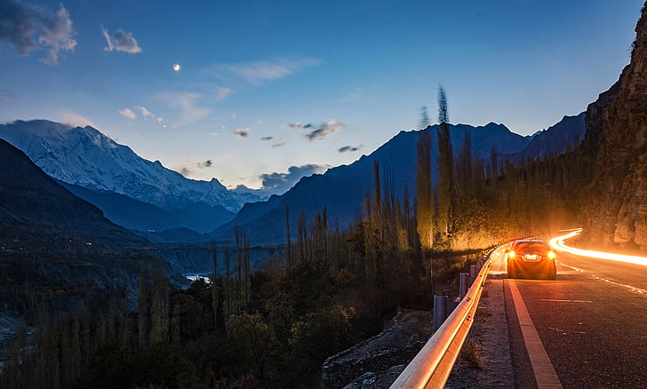
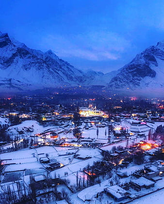
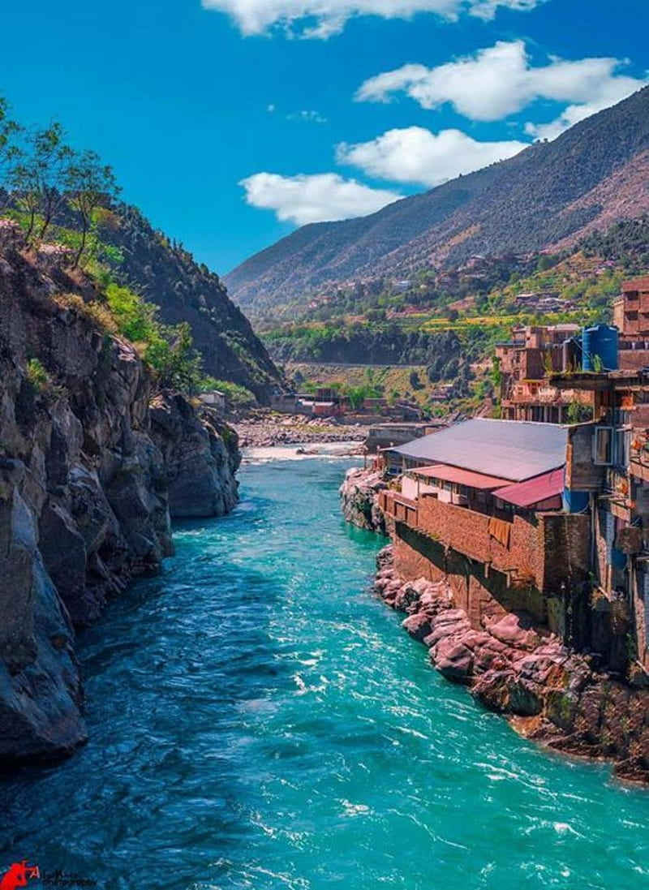
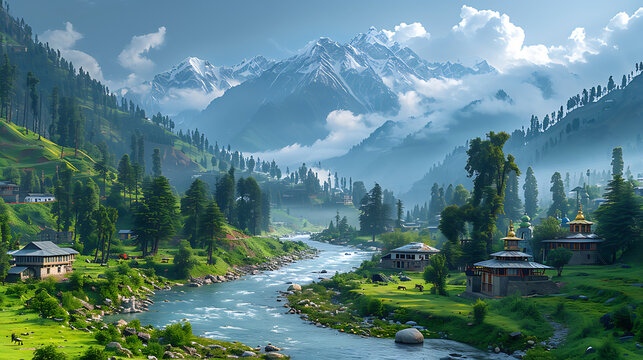

Pakistan's Most Enchanting Mountainous Historical Sites
It's hard to imagine a more magnificent landscape than the rugged peaks, hidden villages and wind-swept plains of Pakistan. Here are a few of the most beautiful places in Pakistan, from wild mountain passes to unreal lakes
1.Hunza Valley
Hunza Valley has a rich cultural heritage and historical significance, known for its ancient fortresses and Silk Road history. The valley was once part of the historical trading route that connected South and Central Asia. The region was governed by local rulers known as "Mirs," and the valley's strategic location made it a crucial area for various empires. Baltit Fort (over 700 years old) and Altit Fort (900 years old) are key historical landmarks, showcasing Tibetan and Ladakhi architectural influences. Baltit Fort served as the residence of the Mirs of Hunza for centuries.
2.Skardu
Skardu is historically significant as the gateway to some of the world's highest peaks, including K2. The region has long been influenced by Tibetan, Persian, and Islamic cultures. Historically, Skardu was part of the Baltistan region and had strategic importance along the Silk Road trade routes. Shigar Fort and Khaplu Palace are historical treasures in the region. Shigar Fort, also known as the "Fort on the Rock," was built in the 17th century and showcases traditional Balti architecture.
3.Swat Valley
wat Valley has a rich historical legacy, particularly as an important center of early Buddhism. It was part of the Gandhara civilization and features many ancient Buddhist stupas and monasteries, such as Butkara Stupa and Udegram Monastery, dating back to the 2nd century BCE. The valley was later influenced by Islamic culture, which is reflected in the architecture and heritage of the region.
4.Neelum Valley (Heaven on Earth)
Neelum Valley, located in Azad Kashmir, has historical significance due to its proximity to ancient trade routes and cultural heritage. The valley is home to the Sharda Peeth, an ancient Hindu temple and center of learning that dates back to ancient times and was once one of the foremost centers of Hindu learning and scholarship. The valley's unique cultural blend is influenced by its historical interactions with Tibetan, Kashmiri, and Central Asian civilizations.